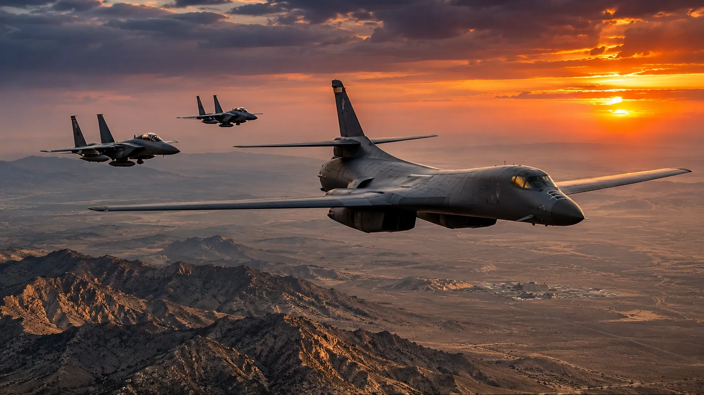

ISRAEL AND U.S. FACE IRAN ENDGAME
Military pressure has damaged Iranian capabilities, but the path to a durable settlement remains uncertain.

After months of confrontation, the hardest question facing Washington and Israel may no longer be how much Iranian military equipment can be destroyed. It may be what political arrangement—if any—could prevent the conflict from restarting.
The United States has maintained a naval blockade and carried out limited strikes. An assessment published November 8 by Israel's Institute for National Security Studies described a substantial U.S. naval presence in the region alongside a comparatively thinner forward-deployed air component. It also noted the continued reinforcement of air defenses.
That mix of forces tells a complicated story. Ships can enforce restrictions and project power. Air defenses can protect forces and partners from retaliation. But neither capability automatically creates a diplomatic settlement, and military pressure can produce resistance as well as concessions.
Israel has its own security calculations involving Iranian missile capabilities, regional armed groups and the prospect of future attacks. Washington must also consider the safety of American forces, the economic effects of disrupted shipping and the possibility that new strikes trigger retaliation across multiple countries.
The nuclear issue is particularly difficult. Facilities can be damaged, but technical expertise cannot simply be bombed out of existence. A durable agreement would require monitoring, incentives and political commitments that each side believes are more useful than returning to conflict.
This is why the word 'endgame' should not be confused with 'victory.' A pause in strikes is not necessarily peace. A weakened opponent is not necessarily a cooperative one. The real measure will be whether the region becomes more stable after the shooting stops—or merely begins preparing for the next round.
Sources and further reading: Reporting and source material